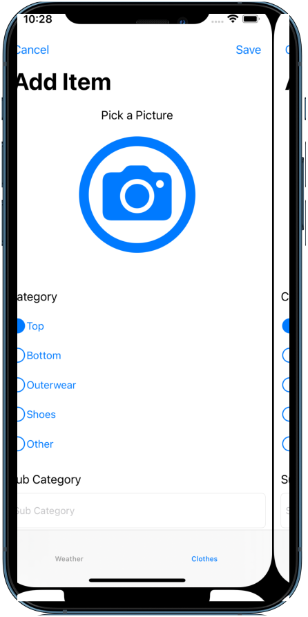
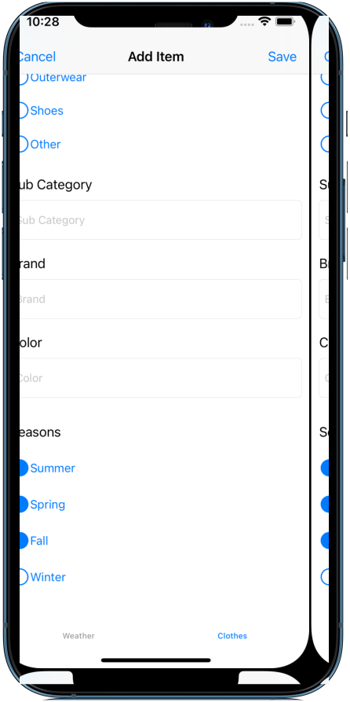

Weather Wear in Action

Weather ViewController
- I designed the WeatherVC to show the weather data once the user has chosen a location from the map. I wrote the "openMap()" function to instantiate the mapVC and use a call back function to pass the latitude and longitude coordinates for the API call.
Setting up the data
WeatherVC - Github
GitHubMap ViewController
- My implementation for getting the weather data was to use MapKits features to create a visual experience when choosing a location.
- The user interacts with the map through a long tap gesture. The "dropPin()" function uses the tapped location to create a location marker that will be added to the map and saved to user-defaults.
- When the pin is tapped an annotation view is presented. The right call out accessory presents the option to get the weather data for that location. On line 50, the call back function is given the latitude and longitude coordinates which is used for the API.
Marking locations on the map
MapVC - Github
GitHub

Clothing Suggestions ViewController
- When the user wants to see clothing suggestions for a specific day of the week the "ClothingSuggestionsVC" is presented. This works by setting the season property based on the temperature and is set upon instantiation of the view controller. The clothing items are fetched from core data and saved to an array which is filtered by season and category when presented in the table view cell. The result is a table view that displays only clothing items that match the season based on the clothing items details.
Showing clothing items in the category cells
ClothingSuggestionsVC - Github
GitHubClothes ViewController
- When implementing the delete feature I encountered the problem of trying to delete items when the user had performed a filtered search. When the items were filtered and chosen for deletion, the incorrect items were being deleted. I realized that the wrong index path was being removed as the filtered array of objects index paths were not the same as the main collection.
- The solution was to identify the items index in the main collection instead of deleting an item based on the index of the filtered array. This works by retrieving the actual items index (line 9) and not the filtered array index the item occupies. Once the items indexes are added to a local array they are deleted from core data, the context is re-saved and the collection view is reloaded.
Deleting items from the collection
ClothesVC - Github
GitHub
 
Add Item ViewController
- In order to add clothing items, I needed users to fill in all the details of a custom form. I designed the form using a table view and created custom cells. Notably I created two cells that used radio buttons in order to capture the category and season. I used the protocol-delegate pattern to give the cells radio buttons a specific behavior.
- The category cell delegate function "didTapCategoryButton()" checks which button is the sender, sets all other buttons to false and assigns the text to the clothing category property. This ensures only 1 option can be selected for the category.
- The season cell delegate function "didTapButton()" allows for multiple buttons to be checked. To save multiple seasons the function adds any checked buttons text property to an array. The seasons array must only contain unique values and achieves this by checking when a radio button is set to true. When its false it will check if that season is already in the array and remove it if it is found. By default the radio buttons start off in the "false" state so by using the ! operator in the check statement it will be executed when the button is set to true.